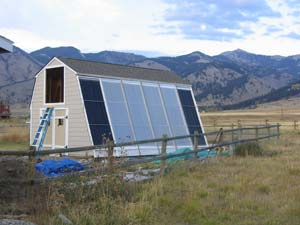

Solar Heating Plan For Any Home
Slash your home heating bills with this exciting solar project. If you can build a deck, you can build this super system!
By Gary Reysa
December 2007/January 2008
It’s time to take advantage of solar heat to reduce your dependence on fossil fuels and lower your heating bills. This simple, yet effective, system can be utilized in almost any home. Because the solar collectors and the heat storage tank for the system are built into a small new outbuilding, you don’t need to completely remodel your home to use solar heat. On sunny days (or even partly sunny days) the collectors add heat to the storage tank. When the house needs heat, hot water from the storage tank is transferred to the house via an underground pipe into a radiant floor heating system. (See illustration in the Image Gallery.) The new building that houses our collectors is a storage shed, but yours could be a studio, playhouse or workshop.
Advantages of This Approach
- The collectors are mounted at ground level, where they are easy to build and maintain.
- The collectors can be oriented and tilted for maximum solar collection.
- The collectors and the building can share a structure in such a way that the material costs and time to build are reduced for both the collectors and the shed.
- The collectors look good integrated with the shed (see photo, Image Gallery).
- You don’t have to find a space for a large thermal storage tank in the house.
- The steeply tilted or vertical collectors located close to the ground benefit from light reflected off the ground, particularly when the ground is snow covered. And, vertical or near vertical collectors are less prone to overheating in the summer.
Considerations
There are many ways to build this system, but remember these design guidelines to ensure that your system works well:
- The collectors should face within 30 degrees of true south and should not be shaded by trees or structures during the three hours before and after solar noon. Be sure to check carefully for any obstructions that would shade the collectors (see “Solar Site Survey” in “Resources,” below).
- To minimize heat loss from the pipes that carry water to the house, the collectors should be as close to the house as possible. The pipes should be well insulated and the trench should be deep enough that the pipes are below the frost line for your area.
- The thermal storage water tank must be well insulated. This requires careful insulation and careful sealing of the tank lid.
The system that distributes the heat within the house should be able to use water that is as low in temperature as possible. Lower temperature water for heating will allow the solar collectors to operate more efficiently and collect more heat. We added a radiant floor heating system to distribute the solar heat throughout our home. This radiant floor can make use of water as cool as 85 degrees to heat the floors.
Our system is designed to be as simple as possible. It uses a design in which water drains back from the collectors into the storage tank for freeze protection. Because it uses plain water and the system is vented to the atmosphere, there is no need for expansion tanks, pressure relief valves, vacuum breakers, antifreeze or heat exchangers. The collector loop plumbing consists of a few feet of pipe and a circulation pump - that’s all. This simplicity reduces the cost and labor to put the system together, and the absence of heat exchangers increases efficiency.
The total amount of work does add up, so be sure to allocate sufficient time - it’s not a one weekend project. But, it’s not rocket science. If you can build a deck, you can build this system.
Designing the System
The shed can be almost any design. We chose a modified gambrel roof to match the style of our existing garage and to provide a loft with good storage room. The only requirements are that the shed has a south wall or steep south roof extending to ground level and is large enough to provide the collector area that you want.
To make it easier to integrate the collectors with the south wall of the shed, choose the south wall width, height and stud spacing to match the collectors. This may result in slightly unconventional dimensions. The best plan is to start from the size of the collector absorber plates and glazing panels, and work from there.
We chose the collector bay frame width spacing of 48 1/4 inches so that standard 48-inch glazing panels could be mounted directly on the collector frames with no cutting. The quarter inch allows for glazing panel expansion. (See “Collector Cross-Section” below.)
The absorber plates are the heart of the collector, and much of the collector’s performance depends on the absorber. The plates also are fairly difficult and time consuming to make because they consist of a series of copper tubing soldered to copper sheeting. The copper tubes are connected by manifolds. The absorber plates can be purchased with a selective finish that reduces heat loss, making them more efficient. We decided to buy pre-made StarFire collector absorber plates, then make the rest of the collector frame and covering from standard lumber and greenhouse supply parts. We used twin-wall polycarbonate glazing, which is slightly more efficient than single wall glazing and is easy to work with (see “Resources” below).
In order for the collectors to drain back to the tank when the pump shuts off, the collectors must slope down toward the tank. This requires that the entire bank of collectors be sloped toward one end with a slope of at least one-eighth inch per foot. The plumbing also must be sloped, and no lines should be less than three-quarter inch diameter. We used 1-inch copper pipe.
Build the Shed & Collector
The south wall of our shed is conventional 2-by-6 stud construction with half-inch plywood sheathing. There is no siding on the south side, and the sheathing also serves as the back wall of the collector. The collector framework is laid out right over the south wall sheathing. It is best to lay out the full collector frame on a flat surface so you can make sure everything fits and gang cut the notches in the frame for the absorber manifolds and the horizontal glazing supports. When cutting the manifold support notches in the framework, be sure to allow for the fact that the absorber manifolds must slope and the lowest corner of the absorber panels must be several inches above the tank water level for drainage.
Install the collector frame on the south wall sheathing. Use lag bolts with the heads in counter bores to make them flush with the front of the frame. Caulk all the outside edges to prevent air leaks. The front surface of the frame is the surface on which the glazing panels will be mounted, so make sure it’s smooth.
Install polyisocyanurate insulation in each collector bay. Nail it to the sheathing with large head nails. Do not use polystyrene insulation inside the collector - it will melt.
Drill a half-inch drain hole in the bottom board of each collector bay so that any water that might get in can escape.
Trim the ends of the absorber manifold pipes so that they will fit together when installed in the frame, then place the absorber plates into the notches in the frame. We soldered the manifolds together using ordinary copper solder couplings.
The supply line from the tank pump is hooked to the bottom manifold at the lower end. The return line is hooked to the top manifold at the higher end. The remaining open ends of each manifold are capped. Test the manifold for leaks.
We included vents in each collector bay to reduce the likelihood of the collector overheating when no water is flowing through it. The vents consist of high and low openings in the back wall of each collector bay. Air from the shed enters the lower vent, flows through the collector and exits the upper vent. This flow of air provides cooling for the collector. The upper openings have doors to control airflow. (For a similar design concept, see Build a Simple Solar Heater in the December 2006/January 2007 issue. - Mother.)
Install the horizontal glazing supports in the previously cut notches. These are located just behind the glazing panels to support them and prevent them from buckling. We used electrical metallic tubing (EMT) conduit for the supports.
Install the glazing panels. We used 4-by-12-foot twin-wall polycarbonate glazing panels and secured them with 1-by-2-inch vertical strips screwed to the collector frame. These cap strips are ripped from composite deck boards, which are likely to last longer than ordinary wood strips. We used stainless steel screws to prevent rust stains. No caulk or glazing tape was used between the glazing panels and the collector frame - which has worked fine, with no leaks - and it makes removing glazing panels much easier.
The Storage Tank
The tank is large enough to hold about one sunny day’s worth of collected sunshine. On a sunny day, the tank can hold enough energy to heat the house through the night and part of the next day if it’s cloudy. A general rule of thumb is to have about 1 1/2 to 2 gallons of water storage per square foot of collector.
The waterline of the tank must be several inches below the lower manifold of the collectors in order to allow the collectors to fully drain back into the tank. In our case, the 3-foot-high tank is sunk into the ground about 2 feet so the collectors could be mounted just over a foot above the bottom of the south wall.
We chose to build a tank that uses plywood walls lined with an ethylene propylene diene monomer (EPDM) rubber membrane (pond liner). The tank bottom and walls are three-quarter-inch exterior plywood. The plywood is supported by a 2-by-4 frame around the base of the walls and a second 2-by-4 frame around the top of the walls. A single 2-by-4 vertical stiffener is used in the center of the long walls. A beveled vertical 2-by-3 is used in each corner of the tank to tie the end walls and side walls together. A metal tension tie extends across the top of the tank at the midpoint of the long walls and ties the top of the long walls together. This tension tie is necessary to keep the long walls of the tank from failing due to outward water pressure.
The tank construction is important; it will be holding about 4,000 pounds of water! All joints should be carefully glued and screwed together. The tank must sit on a level and solid surface. We placed the tank on about 3 inches of washed gravel, which had been leveled and tamped.
When the tank plywood shell is completed, cut a piece of EPDM pond lining material large enough to line the entire tank with no seams. Lay the liner over the top of the tank and carefully work it down into the tank. After the liner touches the bottom of the tank, take off your shoes and work from inside the tank. Continue working the liner into the tank until it is against the walls. Work all the extra material in each corner into a single, neat fold. Then secure the liner to the top frame with silicone caulk held in place with some staples and trim off the excess.
The tank lid is made from two layers of 2-inch-thick rigid foam board glued to a sheet of hard board. The bottom is covered with a layer of EPDM. The lid must be firmly held to the tank to prevent water vapor from escaping - we used lag screws.
Be sure to mount the pump and controller where they are protected from low temperatures. We did this by positioning both in a compartment close to the storage tank, with most of the insulation detouring around the outside of it so the compartment is kept warm by heat from the tank.
Most of the pipes coming into the tank go over the top edge then down into the tank. This eliminates penetrating the EPDM liner and reduces the potential for leaks. The exception to this is the pump inlet connection, which does penetrate the tank wall. This is necessary because the pump must be mounted below the tank waterline to retain its prime. Use a high-quality bulkhead fitting for the connection through the tank lining.
Heat Transfer Trench
The trench for the transfer pipes should extend below the frost line, and insulation of the pipe is very important. For our 120 feet of pipe, about 3 percent of the heat energy in the water is lost on the round trip. We used three-quarter-inch Chlorinated Polyvinyl Chloride (CPVC) pipe for the supply and return lines. PEX pipe would probably also work well.
We made the insulation for the pipes by cutting 8-inch-wide strips of 2-inch-thick extruded polystyrene (pink) insulation board. Two three-quarter-inch grooves are cut down the length of each strip for the pipes to sit in. One 8-inch strip goes under the pipes. Another strip fits on top of the pipes. The strips are glued together with polyurethane foam insulation from a spray can. The strips can be weighted or tied together until the foam cures.
Heat Distribution
We decided to remodel our floors to include hydronic radiant heat. The solar heating and radiant floors make an efficient combination, plus we didn’t like our old floors. We did this by removing the existing finish floor and installing three-quarter-inch plywood spacers with slots between the spacers for PEX tubing. Aluminum heat spreader plates were used to improve the efficiency and eliminate hot spots directly over the PEX-Aluminum-PEX. This is a type of PEX tubing that has a layer of aluminum sandwiched between two layers of PEX. The advantage is it expands much less than standard PEX when heated, so floor noises are less likely. It is also easier to install, because it retains its shape when bent. After the PEX was installed, we covered the floors with laminate flooring.
As a rough guide, three loops of about 250 feet each (a total of 750 feet) were enough to distribute the heat from the 240-square-feet of solar collectors.
All of the floor heating loops start and end at a common point. One end of each loop is connected to the supply manifold; the other end, to the return manifold. Water from the storage tank is pumped into the supply manifold, then out through the floor loops and back to the return manifold where a pipe takes it back to the storage tank. If water from the storage tank is too hot to go directly to the floor, a mixing valve installed in the supply line mixes water returning from the floor loops with the supply water to bring the temperature down to a level that is safe for the floor. We used a commercial set of supply and return manifolds that included all the fittings, air vents, valves and temperature gauges.
Automatic Controls
The controls for the system are simple and operate the system efficiently. A standard Goldline differential controller is used to control the pump that circulates water to the collectors. It senses when the collector is hotter than the tank water and turns on the pump.
For the first month, we just noted when the tank temperature was above 90 degrees and manually plugged in the pump to circulate hot water through the floors. When the tank went below 90 degrees we unplugged the pump. This is surprisingly effective, and it gives you a good feel for how the system is operating.
I have since installed two electronic thermostats. The first turns on when the tank temperature is above 90 degrees, and the second turns on when the room temperature goes below 70 degrees. These two thermostats are wired in a series, such that the pump is only turned on when the tank is hot and the house is cold. And, because the thermostats both run on 120 volt AC, there is no need for low voltage control wiring or relays.
The control system is set up to use heat as soon as the storage tank is hot enough to supply useful heat. Using the heat as soon as the tank reaches 90 degrees rather than waiting for the tank to get hotter increases the efficiency of the collectors and also reduces losses throughout the system. For example, on a 35-degree day with full sun, the collectors will operate at about 59 percent efficiency if the tank water is at 90 degrees, versus 42 percent efficiency if the tank is at 150 degrees. (Click here for a PDF of the Solar Shed Control Diagram.)
Performance Data
Here is performance data for two sample days from last winter.
Jan. 12, 2007: A very cold sunny day. At 10 a.m. when the collector started gathering heat, the outside temperature was 20 below zero! The collector warmed the storage tank water from a morning low temperature of 85 degrees to 125 degrees in the afternoon. This heat energy stored in the water is the equivalent of 2 gallons of propane burned in a furnace of typical (85 percent) efficiency.
Jan. 27, 2007: A typical sunny winter day with a high of 30 degrees. The tank warmed from a morning low of 85 degrees to an afternoon high of 132 degrees. This is the energy equivalent of 2 1/2 gallons of propane burned in a typical furnace.
Cost and Return
The cost of the solar system components was about $4,200 total. This includes Montana tax credits and an allowance for siding that would have been needed for the shed if the collectors hadn’t covered the south wall. I estimate that the system will reduce our propane use by about 340 gallons per year, now worth about $740 in our area. The simple payback period is about 5 1/2 years (at the 2007 price for propane). You can find a complete cost analysis PDF here.
Other Opportunities
Solar heating of water for domestic use could be included in the design. By preheating water when the full output of the collector is not needed for space heating, the system would earn a greater return.
You may want to use some of the collector heat to warm your new collector building. You could use the venting scheme described above to provide heating. By using some of the collector output for heating the new building, somewhat less heat is collected for the house. But, the collector will operate more efficiently with air flowing through the vent system. If you choose to do this, be sure to insulate and seal the new building well.
Resources
Solar Site Survey (to check for shading)
Differential Controller Goldline GL30
Electronic Thermostats
Johnson Controls A419
(available from multiple sources)
Twin-wall Polycarbonate Glazing
(also available from other greenhouse supply outlets)
Collector Pump and Circulation Pump
www.radiantsite.com;
www.grundfos.com/web/homeus.nsf/Webopslag/UGRD-5E9BXF
Lessons Learned: You Can Build Your Solar System Even Better!
While the project has been a success, and we are quite satisfied with how it works, there is always room for improvement. Here are some things we would do differently:
- Use vertical collector panels (rather than tilted at 70 degrees). This would:
• collect nearly the same amount of energy
• be less likely to overheat in the summer
• collect much less snow during snowstorms
• be easier to build and easier to fully integrate the collector into the wall - Include a small overhang with a gutter above the collectors. This would shade the top of the collectors in the summer, and the gutter would prevent snow melt from dripping on the collector glazing.
- Make the collector frames from 2-by-6s instead of 2-by-4s, which would allow room for more insulation behind the absorber plates and a little more space between the glazing and the absorber plates.
- Fully integrate the collector into the shed wall, so that the collector framing is the same as the wall framing. This could be done with 2-by-6 studs at 4-foot spacing - perhaps with a heavier top and bottom sill - depending on the size of the shed. The combined sheathing and collector back could be applied to the inside surface of the studs. This would save some additional money, material and labor.
- Include a layer of the polyisocyanurate insulation inside the storage tank plywood walls. This is the best place to put insulation, since there is no tank framing to fit the insulation around, and no thermal bridging. The tank could be made a bit taller to make up for the lost volume.
- Reduce losses in transferring heat to the house by building the solar shed closer to the house and/or insulating the underground pipes even better.
- Connect the collector manifolds together using either unions or high temperature silicone hose instead of the soldered couplings.
Gary Reysa is passionate about solar heating. He’s been fighting Old Man Winter with solar heat since moving to Montana.If you have comments or questions about this project, post them in the comments section below, or e-mail the author at gary@builditsolar.com.
Show off Your Solar
We’re always looking for photos of attractive solar homes to possibly profile or feature on the cover of Mother Earth News. If you have photos you’d like to share with us, post them online at cu.MotherEarthNews.com.
|
GARY REYSA Gary Reysa’s home in the foothills of southwest Montana. Heat collected in the shed (right) is transferred to the house (left) via underground water pipes. The collectors on the garage (middle) heat the garage with solar-heated air. |
 LEN CHURCHILL Solar heating system diagram |
LEN CHURCHILL Collector cross-section |
|
GARY REYSA The water storage tank is built from plywood and pond liner material. |
GARY REYSA Light reflected up off snow will increase the effectiveness of the collectors. To avoid snow accumulation on the collectors, make them vertical (instead of tilted) and add an overhang to the shed. |
GARY REYSA Heat from the solar collectors is distributed through a radiant floor heating system using PEX tubing running through aluminium heat spreader plates. A hot water baseboard heating system is another option. |
|
GARY REYSA Plywood spacers ensure that PEX pipes are evenly distributed in the radiant-heat floor. |
 GARY REYSA Glazing is in place over the four middle collector bays. The absorber plates are still exposed in the two outside collector bays. |
|